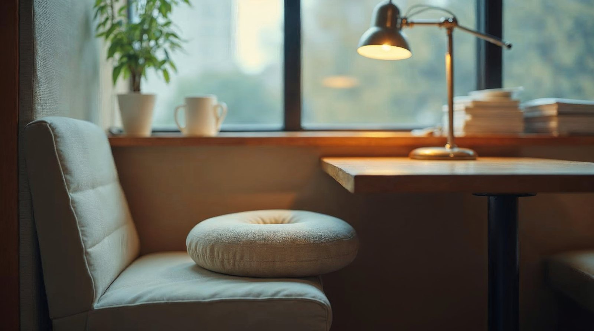
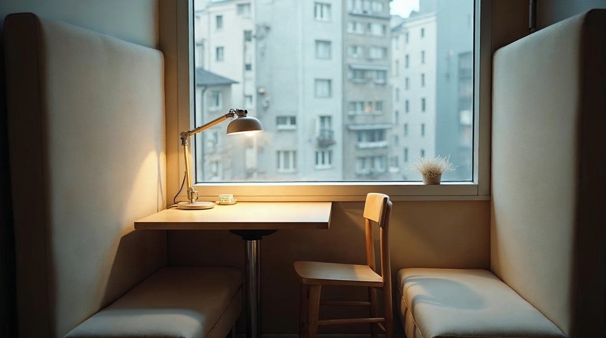
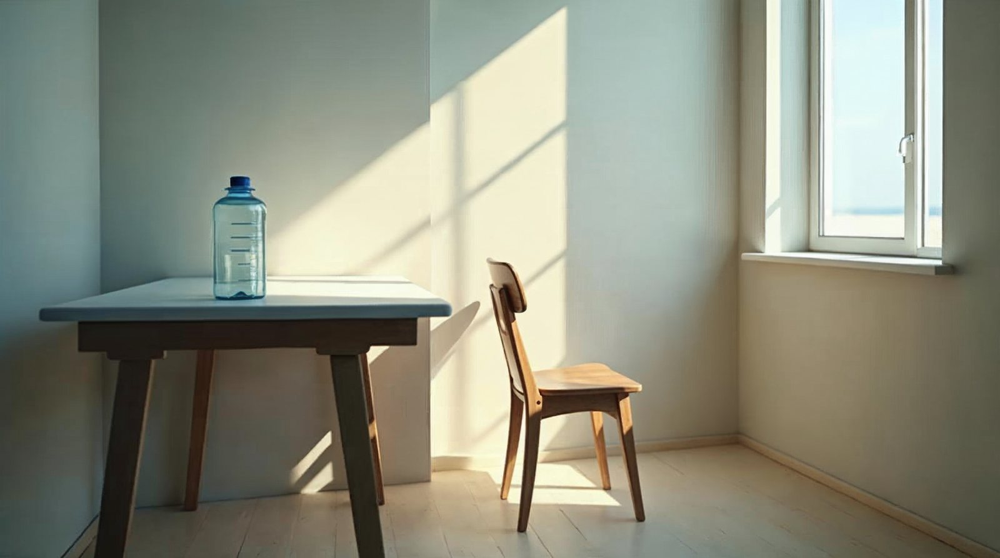
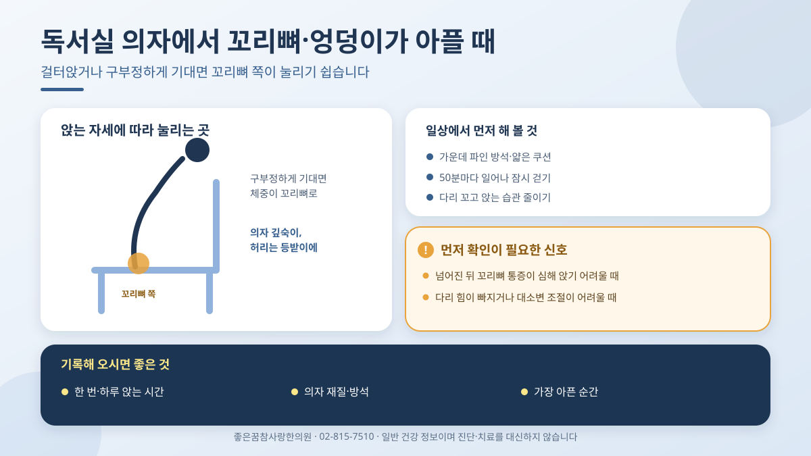

이종호 한의사 감수좋은꿈참사랑한의원 대표원장 (한의사 면허번호 19769)발행 2026-11-24 · 수정 2026-11-26
이 글의 차례
- 왜 이런 불편이 생길 수 있나요
- 추운 날이나 시험 직전에 더 아프게 느껴지는 이유는?
- 먼저 이렇게 여쭙니다
- 일상에서 먼저 해 볼 수 있는 것
- 꼬리뼈 통증과 비슷한 다른 불편은 어떻게 구별하나요?
- 상황별 예시
- 스스로 점검해 보세요
- 방석과 의자는 어떻게 고르면 좋을까요?
- 쉬는 시간에 해 볼 수 있는 가벼운 동작이 있나요?
- 공부 시간표에 움직임을 넣으려면?
- 한의원에서 함께 살필 수 있는 경우
- 변비가 있으면 꼬리뼈가 더 아픈 건 왜일까요?
- 얼마나 지켜보고 언제 상담할까요
- 첫 진료에서는 어떤 순서로 살피나요?
- 이렇게 기록해 오시면 상담이 쉬워집니다
- 이런 증상은 먼저 확인이 필요합니다
- 관련 글
꼬리뼈가 눌리지 않게 방석을 바꾸고 50분마다 일어나 걷는 것이 오래 앉아 생기는 꼬리뼈 통증을 줄이는 첫걸음입니다. 독서실과 스터디카페에서 하루 열 시간 넘게 앉아 있다 보면 꼬리뼈 근처가 욱신거리고 엉덩이가 저린 느낌이 든다는 수험생이 있습니다.
오래 앉아서 생긴 통증이라면 앉는 시간을 나누고 방석과 자세를 바꾸는 것부터 해 볼 수 있습니다. 2~3주 넘게 같은 정도로 아프거나 엉덩이에서 다리로 저림이 내려온다면 한 번 살펴보시는 것이 좋습니다.
왜 이런 불편이 생길 수 있나요
- 의자 끝에 걸터앉거나 허리를 구부정하게 기대면 체중이 꼬리뼈 쪽으로 쏠려 눌리기 쉽습니다.
- 스터디카페의 높은 의자에서 발이 바닥에 닿지 않으면 엉덩이가 앞으로 미끄러져 꼬리뼈가 더 눌리기도 합니다.
- 졸음을 참으며 등을 둥글게 말고 앉아 있으면 골반이 뒤로 기울어 꼬리뼈 끝이 의자에 닿기 쉽습니다.
- 딱딱한 의자에 오래 앉으면 엉덩이 근육이 계속 눌려 저리거나 욱신거릴 수 있습니다.
- 다리를 꼬는 습관은 골반을 한쪽으로 기울게 해 엉덩이 한쪽에 부담이 몰리기도 합니다.
- 오래 움직이지 않으면 허리와 골반 주변이 함께 굳어 일어설 때 통증을 더 크게 느낍니다.
- 화장실을 참거나 변비가 이어지면 꼬리뼈 주변이 더 묵직하다고 느끼는 분도 있습니다.
추운 날이나 시험 직전에 더 아프게 느껴지는 이유는?
겨울 독서실에서 하체가 차가운 채로 오래 앉아 있으면 엉덩이와 허리 주변 근육이 더 단단하게 굳는다고 말하는 수험생이 많습니다. 시험이 가까워져 긴장이 높아진 시기에는 몸 전체에 힘이 들어가 같은 자세에서도 통증을 더 크게 느끼기도 합니다.
한의학에서는 몸이 차고 긴장이 이어지면 기혈의 흐름이 막혀 통증이 머무르기 쉽다고 보고, 아픈 곳과 함께 손발이 찬지, 잠은 어떤지, 소화는 괜찮은지 같이 여쭙습니다. 하체를 따뜻하게 덮는 무릎 담요 하나, 따뜻한 물 한 잔이 생각보다 차이를 만든다는 이야기도 자주 듣습니다.
먼저 이렇게 여쭙니다
- 한 번 앉으면 몇 시간 정도 일어나지 않나요?
- 의자가 딱딱하거나 높이가 맞지 않나요?
- 아픈 곳이 꼬리뼈 끝인가요, 엉덩이 아래 앉는 뼈 쪽인가요, 엉덩이 옆인가요?
- 앉았다 일어설 때 가장 아픈가요?
- 엉덩이에서 다리 뒤쪽으로 저림이 내려오나요?
- 배변 횟수와 변의 굳기는 어떤가요, 화장실에서 오래 힘을 주는 편인가요?
- 공부하지 않는 날에도 앉아 있을 때 꼬리뼈가 욱신거리나요?
- 넘어지거나 엉덩방아를 찧은 적이 있나요?
- 다시 오신 분께는 지난번 이후 의자와 방석을 바꿔 보셨는지부터 이어서 여쭙니다.

일상에서 먼저 해 볼 수 있는 것
- 가운데가 파인 방석이나 얇은 쿠션 깔기
- 허리를 등받이에 붙이고 엉덩이를 의자 깊숙이 넣어 앉기, 허리 뒤에 작은 쿠션이나 접은 수건 대기
- 발이 바닥에 닿지 않으면 발받침을 두고 무릎이 엉덩이와 비슷한 높이가 되게 맞추기
- 50분마다 일어나 잠시 걷고, 쉬는 시간에는 계단을 한두 층 오르내리기
- 다리를 꼬고 앉는 습관 줄이기, 꼬고 싶어질 때는 두 발을 바닥에 나란히 놓고 자세를 다시 잡기
- 화장실을 오래 참지 않고 물을 나눠 마시기
- 추운 날에는 무릎 담요로 하체를 따뜻하게 덮고 앉기
꼬리뼈 통증과 비슷한 다른 불편은 어떻게 구별하나요?
엉덩이 근처가 아프다고 하면 모두 꼬리뼈 문제로 생각하기 쉽지만, 아픈 자리를 손가락으로 짚어 보면 서로 다른 곳인 경우가 많습니다. 저는 앉은 채로, 또 일어선 채로 가장 아픈 곳을 짚어 달라고 먼저 부탁드립니다.
- 엉덩이 골 맨 아래 끝, 뼈가 만져지는 자리가 아프고 뒤로 기대 앉을 때 심하다면 꼬리뼈 자체가 눌리는 경우를 먼저 생각합니다.
- 엉덩이 아래쪽 양옆, 앉을 때 의자에 닿는 뼈 쪽이 아프다면 앉는 뼈와 그 주변 힘줄이 눌리는 경우를 함께 봅니다.
- 엉덩이 한가운데 깊숙이 뻐근하고 허벅지 뒤로 저림이 번진다면 엉덩이 깊은 근육이 신경 주변을 압박하는 경우를 함께 살핍니다.
- 허리를 숙이거나 기침할 때 엉덩이와 다리까지 당긴다면 허리에서 내려오는 경우를 먼저 확인합니다.
- 항문 주변이 아프거나 피가 묻어난다면 꼬리뼈보다 대장항문 쪽 진료가 먼저 필요할 수 있습니다.
같은 수험생이라도 앉는 습관에 따라 아픈 자리가 다릅니다. 예를 들어 등을 둥글게 말고 기대어 앉는 경우는 꼬리뼈 끝이, 몸을 앞으로 숙이고 엉덩이를 뒤로 뺀 채 앉는 경우는 앉는 뼈 쪽이 더 불편한 경우가 많습니다.
상황별 예시
- 예를 들어 아침 일찍 스터디카페에 들어가 밤늦게까지 앉아 있는 공무원 수험생의 경우, 식사 시간 말고는 거의 일어나지 않아 저녁 무렵 꼬리뼈 근처가 욱신거릴 수 있습니다. 50분 공부 뒤 5~10분은 일어나 걷는 시간표를 정하고, 자리를 고를 수 있다면 등받이가 있는 의자부터 골라 볼 수 있습니다.
- 예를 들어 독서실 의자가 딱딱해 두꺼운 쿠션을 겹쳐 깔았더니 오히려 몸이 앞으로 밀리고 허리까지 아파진 경우, 쿠션 두께와 의자 높이가 맞는지부터 함께 살펴봅니다.
- 예를 들어 겨울 빙판길에서 엉덩방아를 찧은 뒤 꼬리뼈가 아프기 시작한 경우라면, 오래 앉아서 생긴 통증과는 살필 방향이 달라 언제 어떻게 다쳤는지와 앉기가 얼마나 어려운지를 함께 여쭙습니다.

스스로 점검해 보세요
- 한 번 앉으면 두 시간 넘게 일어나지 않는 날이 많다
- 의자 끝에 걸터앉거나 엉덩이를 앞으로 빼고 기댄다
- 앉아 있을 때보다 앉았다 일어설 때 꼬리뼈가 더 아프다
- 다리를 꼬고 앉는 습관이 있다
- 변비가 있거나 화장실을 자주 참는다
- 엉덩이에서 다리로 저림이 내려오거나 다리에 힘이 빠진다
앞의 다섯 가지는 앉는 자세와 쉬는 간격부터 바꿔 볼 신호입니다. 마지막 항목은 꼬리뼈보다 허리와 골반 쪽을 함께 살펴야 할 수 있는 신호입니다.
방석과 의자는 어떻게 고르면 좋을까요?
꼬리뼈가 아프기 시작하면 가장 먼저 푹신한 방석을 찾게 되는데, 두껍고 부드러울수록 좋은 것은 아닙니다. 너무 푹신하면 엉덩이가 가라앉아 결국 꼬리뼈가 다시 닿고, 너무 두꺼우면 몸이 앞으로 밀립니다.
- 뒤쪽 가운데가 파이거나 뚫린 방석을 골라 꼬리뼈가 닿지 않게 하기
- 방석 두께는 3~5cm 정도에서 시작해 앉아 보며 조절하기
- 방석을 깔면 의자가 높아지니, 발이 바닥에 닿는지 다시 확인하기
- 등받이가 있는 의자를 고르고, 등받이와 허리 사이가 뜨면 작은 쿠션으로 채우기
- 회전의자보다 흔들림이 적은 의자에서 오래 앉는 공부를 하기
스터디카페처럼 자리를 매일 바꾸는 곳이라면 방석을 가방에 넣어 다니는 분도 많습니다. 접이식이나 얇은 방석이라도 꼬리뼈 부분만 비어 있으면 차이를 느끼기 쉽습니다.
쉬는 시간에 해 볼 수 있는 가벼운 동작이 있나요?
50분 공부하고 일어났을 때 그냥 다시 앉기보다 2~3분만 몸을 움직여 주면 엉덩이와 허리의 긴장을 덜 수 있습니다. 모두 아프지 않은 범위에서 천천히 합니다.
- 일어서서 양손을 허리에 얹고 골반을 앞뒤로 천천히 기울이기
- 벽을 짚고 서서 한쪽 무릎을 가볍게 뒤로 굽혀 허벅지 앞쪽 펴기
- 계단이나 복도를 천천히 걸으며 엉덩이 근육 움직이기
- 다시 앉을 때 엉덩이를 의자 깊숙이 넣고 허리를 세운 뒤 등받이에 기대기
엉덩이를 손으로 세게 문지르거나 딱딱한 공 위에 꼬리뼈를 대고 누르는 것은 아픈 곳을 더 자극할 수 있어 권하지 않습니다. 엉덩이 근육을 풀고 싶다면 꼬리뼈에서 조금 떨어진 엉덩이 옆쪽 근육을 부드럽게 눌러 주는 정도로 시작해 보세요.
공부 시간표에 움직임을 넣으려면?
꼬리뼈 통증은 얼마나 오래 앉느냐보다 얼마나 오래 쉬지 않고 앉느냐에 더 많이 영향을 받습니다. 하루 열 시간을 공부하더라도 중간중간 끊어 앉으면 부담이 덜합니다.
- 휴대폰 타이머를 50분에 맞추고 알람이 울리면 자리에서 일어나기
- 물병을 일부러 작게 가져가 물을 채우러 자주 일어나기
- 점심과 저녁 식사 뒤에는 10분 정도 바깥을 걷고 들어오기
- 오후에 졸릴 때는 엎드려 자기보다 잠시 서서 공부하거나 걸으며 암기하기
예를 들어 암기 과목은 서서 하거나 걸으면서 소리 내어 외우고, 문제 풀이처럼 앉아야 하는 공부는 시간을 정해 몰아서 하는 식으로 나누면 자연스럽게 앉는 시간이 줄어듭니다.

한의원에서 함께 살필 수 있는 경우
- 오래 앉은 뒤 꼬리뼈가 아픈 경우 앉는 자세와 골반의 균형을 함께 살핍니다.
- 엉덩이와 다리가 함께 저린 경우 허리와 골반을 함께 살핍니다.
- 앉았다 일어설 때 통증이 심한 경우 허리와 골반의 움직임을 함께 살핍니다.
좋은꿈참사랑한의원에서는 첫 방문 때 맥부터 짚어 보며 하루 앉아 있는 시간과 의자·방석, 아픈 위치와 아픈 순간을 여쭙습니다. 그 뒤 앉고 서는 동작, 허리를 숙이거나 젖힐 때의 불편, 골반의 기울기와 누르면 아픈 자리를 확인하고, 저림이 있다면 다리의 감각과 힘도 함께 봅니다.
필요하다고 판단될 때 초음파로 엉덩이 주변을 살피고, 침·약침·추나·온열 가운데 지금 상태에 맞는 방법을 정합니다. 귀가 전에는 앉는 자세와 쉬는 간격, 다음 방문 때 다시 확인할 동작을 함께 정해 드립니다.
변비가 있으면 꼬리뼈가 더 아픈 건 왜일까요?
오래 앉아 공부하는 수험생은 움직임이 적고 물을 덜 마시며 식사가 불규칙해 변비를 함께 겪는 경우가 많습니다. 꼬리뼈 앞쪽에는 골반 바닥을 이루는 근육이 붙어 있어, 배변할 때 오래 힘을 주면 이 근육이 긴장하고 꼬리뼈 주변까지 묵직하게 느껴질 수 있습니다.
그래서 저는 꼬리뼈가 아프다고 오신 분께 배변 횟수와 변의 굳기, 화장실에서 오래 앉아 있는지도 함께 여쭙니다. 변기에 앉아 휴대폰을 보며 10분 넘게 머무는 습관도 꼬리뼈와 골반 바닥에 부담을 더하는 일이라 줄여 보시기를 권합니다.
- 물을 하루 동안 나눠 마시고, 끼니마다 채소나 과일 한 가지 곁들이기
- 아침 식사 뒤처럼 일정한 시간에 화장실 가는 습관 들이기
- 화장실에서는 발밑에 낮은 받침을 두어 무릎을 조금 높이기
얼마나 지켜보고 언제 상담할까요
- 방석과 앉는 자세, 쉬는 간격을 바꾼 뒤 1~2주는 앉아 있을 때와 일어설 때의 통증을 지켜보세요.
- 2~3주가 지나도 같은 정도로 아프거나 공부하지 않는 날에도 욱신거린다면 상담을 권합니다.
- 엉덩이에서 다리로 저림이 내려오기 시작했다면 더 기다리지 말고 상담해 보세요.
첫 진료에서는 어떤 순서로 살피나요?
처음 오시면 맥부터 짚고, 하루 공부 시간표와 한 번에 앉아 있는 시간, 의자와 방석에 대해 먼저 듣습니다. 꼬리뼈 통증은 생활 습관과 맞물려 있는 경우가 많아, 아픈 곳보다 하루를 어떻게 보내는지 듣는 데 시간을 조금 더 씁니다.
그다음 의자에 앉았다 일어서는 모습, 허리를 숙이고 젖히는 동작, 한쪽 다리를 들어 올릴 때의 불편을 확인합니다. 누르면 아픈 자리가 꼬리뼈 끝인지, 앉는 뼈인지, 엉덩이 근육인지 나눠 보고, 저림이 있다면 다리의 감각과 힘도 봅니다.
넘어지거나 엉덩방아를 찧은 뒤 시작된 통증이라면 뼈 상태를 영상 검사로 먼저 확인해 보시도록 권하기도 합니다. 드시는 약이나 받은 검사 결과가 있다면 가져와 주시면 함께 살핍니다.
이렇게 기록해 오시면 상담이 쉬워집니다
- 한 번에 앉아 있는 시간과 하루 전체 앉는 시간
- 의자의 재질과 높이, 쓰고 있는 방석
- 앉아 있는 모습을 옆에서 찍은 사진
- 가장 아픈 순간(앉아 있을 때, 일어설 때, 계단을 오를 때)
- 변비나 배변 습관의 변화
- 넘어지거나 엉덩방아를 찧은 일이 있었는지
- 방석이나 의자를 바꾼 뒤 통증이 어떻게 달라졌는지
- 하루 중 꼬리뼈가 아프기 시작하는 시각과 그때까지 앉아 있던 시간
- 공부하지 않는 주말이나 쉬는 날의 통증 정도
이런 증상은 먼저 확인이 필요합니다
- 넘어진 뒤 꼬리뼈 통증이 심해 앉기 어렵거나, 열이 나면서 엉덩이 쪽이 붓고 아픈 경우
- 다리 힘이 빠지거나 대소변 조절이 어렵거나, 엉덩이·사타구니 감각이 둔해진 경우
이런 신호가 있으면 한의원보다 가까운 병원이나 응급실을 먼저 찾으세요.
관련 글
- 오래 앉아 공부하거나 일할 때 허리와 골반은 얼마 간격으로 쉬어 주나요?
- 엉덩이에서 다리로 저림이 내려올 때 한의원에서는 무엇을 먼저 묻나요?
- 오래 앉아 있으면 엉덩이 아래 앉는 뼈 쪽이 아플 때 체외충격파 상담은 어떻게 하나요?

여쭙는 것
- 한 번 앉으면 몇 시간 정도 일어나지 않나요?
- 의자가 딱딱하거나 높이가 맞지 않나요?
- 아픈 곳이 꼬리뼈 끝인가요, 엉덩이 아래 앉는 뼈 쪽인가요, 엉덩이 옆인가요?
생활에서 해 볼 것
- 가운데가 파인 방석이나 얇은 쿠션 깔기
- 허리를 등받이에 붙이고 엉덩이를 의자 깊숙이 넣어 앉기, 허리 뒤에 작은 쿠션이나…
- 발이 바닥에 닿지 않으면 발받침을 두고 무릎이 엉덩이와 비슷한 높이가 되게 맞추기
한의원에서 함께 살필 것
- 오래 앉은 뒤 꼬리뼈가 아픈 경우 앉는 자세와 골반의 균형을 함께 살핍니다.
- 엉덩이와 다리가 함께 저린 경우 허리와 골반을 함께 살핍니다.
- 앉았다 일어설 때 통증이 심한 경우 허리와 골반의 움직임을 함께 살핍니다.
먼저 확인이 필요한 신호
- 넘어진 뒤 꼬리뼈 통증이 심해 앉기 어렵거나, 열이 나면서 엉덩이 쪽이 붓고 아픈 경우
- 다리 힘이 빠지거나 대소변 조절이 어렵거나, 엉덩이·사타구니 감각이 둔해진 경우
한눈에 보는 표
| 구분 | 핵심 |
|---|---|
| 여쭙는 것 | 한 번 앉으면 몇 시간 정도 일어나지 않나요? 의자가 딱딱하거나 높이가 맞지 않나요? |
| 생활에서 해 볼 것 | 가운데가 파인 방석이나 얇은 쿠션 깔기 허리를 등받이에 붙이고 엉덩이를 의자 깊숙이 넣어 앉기, 허리 뒤에 작은 쿠션이나 접은 수건 대기 |
| 한의원에서 함께 살필 것 | 오래 앉은 뒤 꼬리뼈가 아픈 경우 앉는 자세와 골반의 균형을 함께 살핍니다. 엉덩이와 다리가 함께 저린 경우 허리와 골반을 함께 살핍니다. |
| 먼저 확인이 필요한 신호 | 넘어진 뒤 꼬리뼈 통증이 심해 앉기 어렵거나, 열이 나면서 엉덩이 쪽이 붓고 아픈 경우 다리 힘이 빠지거나 대소변 조절이 어렵거나, 엉덩이·사타구니 감각이 둔해진 경우 |
자주 묻는 질문
도넛 모양 방석이 좋을까요?
꼬리뼈가 눌리지 않게 도와줄 수 있어, 앉아 보고 편한 것을 고르는 것을 권합니다.
서서 공부하는 것도 도움이 되나요?
앉기와 서기를 번갈아 하면 한 자세로 오래 있는 부담을 나눌 수 있습니다.
허리 쿠션도 같이 쓰는 게 좋을까요?
허리 뒤를 가볍게 받쳐 주면 엉덩이를 의자 깊숙이 넣고 앉기 쉬워 꼬리뼈가 덜 눌린다는 분이 있습니다. 너무 두꺼우면 몸이 앞으로 밀리니 얇은 것부터 써 보세요.
진료 시간은 어떻게 되나요?
좋은꿈참사랑한의원은 평일 09:30~20:00(점심 13:00~14:00), 토·일·공휴일 09:30~15:00에 진료합니다.
좋은꿈참사랑한의원은 재진 때 지난번 이야기부터 이어서 여쭙니다. 진료시간과 예약은 오시는 길에서 확인하세요.
어디서 상담받을 수 있나요?
좋은꿈참사랑한의원은 서울 동작구 만양로2길 2 신성빌딩 3층·5층(서울 동작구 상도동, 7호선 상도역 3번 출구 근처)에 있습니다. 한의사 3명(이종호 대표원장, 조영기 수석진료원장, 정원영 진료원장)이 진료합니다. 진료시간은 평일 09:30~20:00(점심 13:00~14:00), 토·일·공휴일 09:30~15:00이며, 방문 전 전화로 확인을 권합니다. 예약은 네이버 예약, 카카오톡 상담, 전화 02-815-7510로 받습니다.
이 글은 일반적인 건강 정보이며 개인의 진단이나 치료를 대신하지 않습니다. 증상이 있거나 복용 중인 약이 있다면 진료를 통해 확인하세요. 치료 효과는 개인마다 다를 수 있습니다.
작성 기준: 일반적으로 알려져 있는 건강 정보를 참고해 정리했습니다(대표원장 감수). 증상 기록은 1~2주 동안 하루 1회, 비슷한 시간에 적어 오시면 지난 상태와 비교하기 쉽습니다.